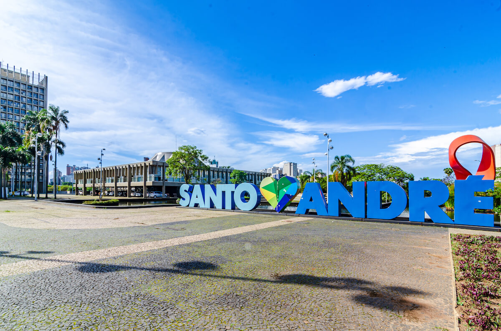

As cinco maiores cidades do estado de São Paulo
- São Paulo
- Guarulhos
- Campinas
- São Bernardo do Campo
- Santo André
1. São Paulo
A maior cidade do Brasil, e centro econômico, financeiro e cultural do país.
População: ~12,3 milhões


Voltar ao topo
Página principal
2. Guarulhos
Grande polo industrial e abriga o principal aeroporto internacional do Brasil.´
População: ~1,4 milhão

Voltar ao topo
Página principal
3. Campinas
Importante centro de tecnologia, ciência e educação.
População: ~1,2 milhão
Voltar ao topo
Página principal
4. São Bernardo do Campo
Conhecida por sua forte presença na indústria automobilística.
População: ~850 mil

Voltar ao topo
Página principal
5. Santo André
Também parte do ABC Paulista, com destaque para a indústria e comércio.
População: ~723 mil


Voltar ao topo
Página principal